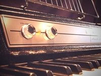

| Фотография | Описание | Цена |
|---|---|---|
|
Родес-пианино - это разновидность электрического пианино, оно было | 240000 рублей |
 |
Электрическое пианино Вурлитцера было создано компанией Рудольфа Вурлитцера | 87000 рублей |
|
Клавинет - это "электрифицированная" версия клавикорда, выпускаемая компьютером | 46000 рублей |